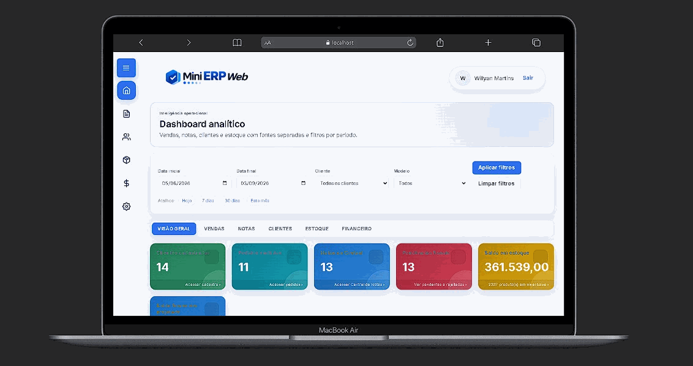
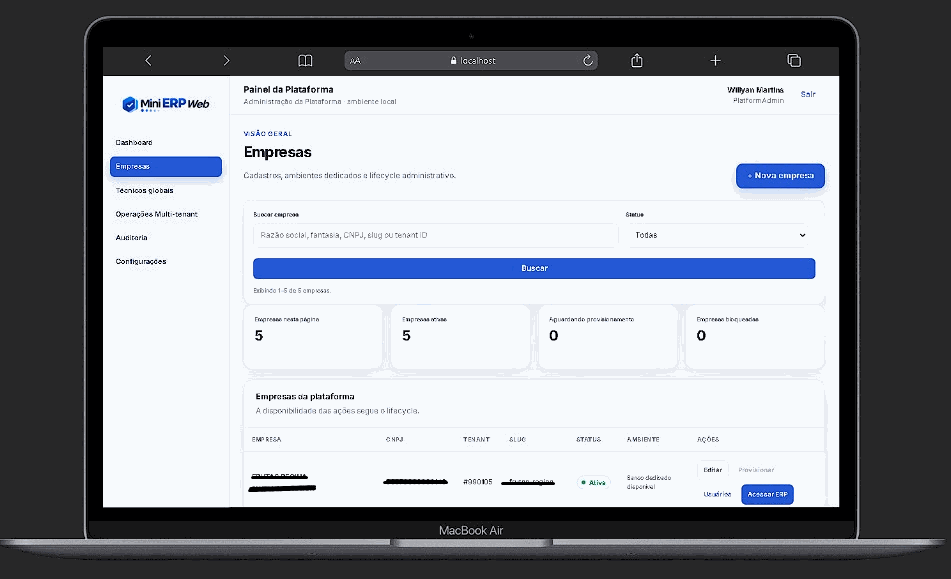
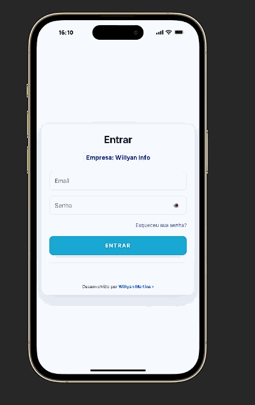
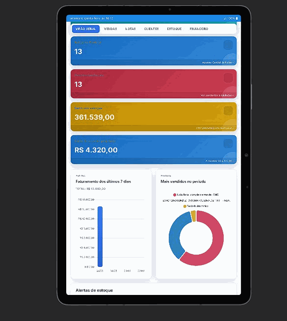

Demo animada das principais telas. Habilite GitHub Pages (branch `main` / folder `docs/`) para publicar.




Agora a demo usa GIFs reais gerados e armazenados em docs/assets/. Use `scripts/make_gifs.py` para regenerar ou otimizar os GIFs localmente.
https://<usuario>.github.io/<repo>/.GIFs já gerados e incluídos no repositório; paginação/controls disponíveis acima.